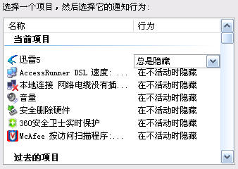

【自动隐藏功能注意事项】
如果设置无忧隐藏开机自动启动，则无忧隐藏在自动启动时将检索当前运行程序，并隐藏在“自动隐藏程序列表”中列出的程序。举例说明，假设您已经将迅雷设置为开机自动运行，并在无忧隐藏的自动隐藏程序列表中加入了迅雷。Windows系统启动后，迅雷和无忧隐藏启动的顺序是不确定的。如果先启动无忧隐藏，则迅雷启动时将不会显示图标 ；如果先启动迅雷，则理论上系统通知区域会出现迅雷图标，之后当无忧隐藏启动时会检测到该图标并将其隐藏。实际操作中，对于性能较高的机器，通常不会看出这个变化，因为无忧隐藏具有较高的进程优先级。如果您要确保迅雷启动时不被发现，可以和操作系统自带的图标隐藏功能配合使用。操作如下：
1）确保已经运行了迅雷。
2）鼠标右键点击任务栏空白处（或者屏幕右下角的时钟）。
3）在弹出的菜单中选择“属性”。
4）选择“通知区域”－>“自定义”，然后将迅雷图标设置为“总是隐藏”即可。如下图：

如此设置以后，当迅雷启动时，其图标是看不见的。但这种隐藏并不彻底，用户点击通知区域的箭头图标时，还是可以看到迅雷图标。而无忧隐藏启动后会对其进行彻底的隐藏。
请注意：如果您是通过双击鼠标手动启动无忧隐藏，则无忧隐藏启动时不会检测当前是否有需要自动隐藏的程序，其自动隐藏功能只会对之后启动的程序有效。